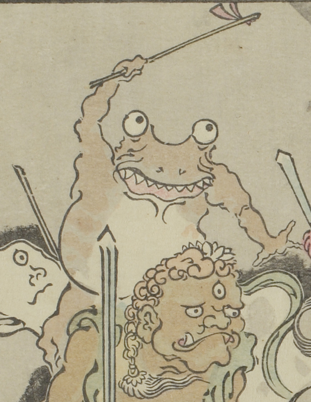

蛙のような化物。両目が飛び出し、口には鋭い牙が並んでいる。左手に棒状のものを持ち、頭上に掲げている。
出典：親書誌：U426_nichibunken_0093：暁斎百鬼画談；ギョウサイヒャッキガダン／日付：2006／資源識別子：U426_nichibunken_0093_0002_0010
Copyright (c)2010- International Research Center for Japanese Studies, Kyoto, Japan. All rights reserved.